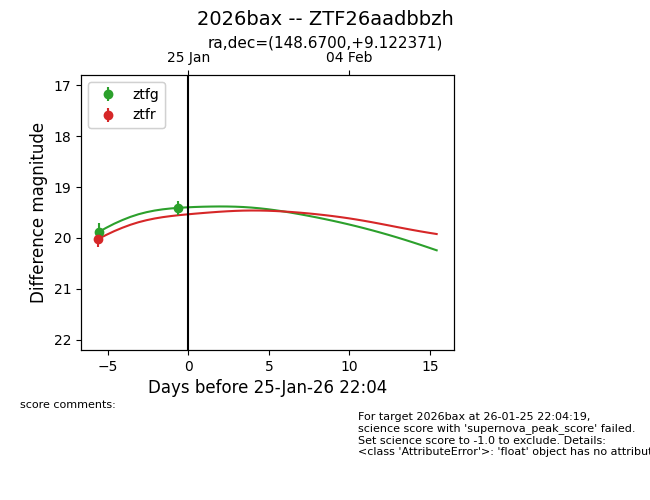
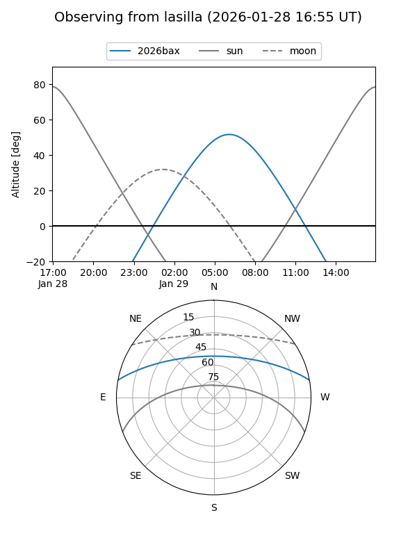
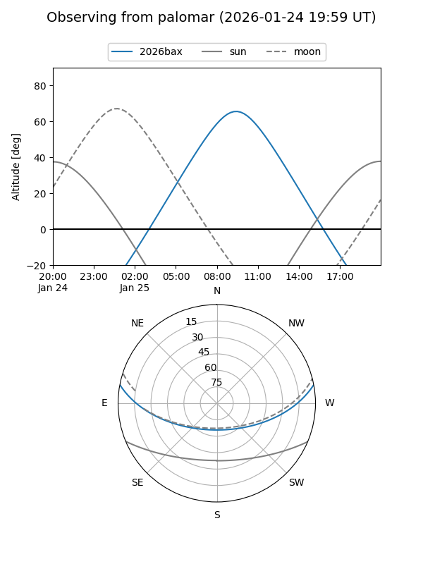
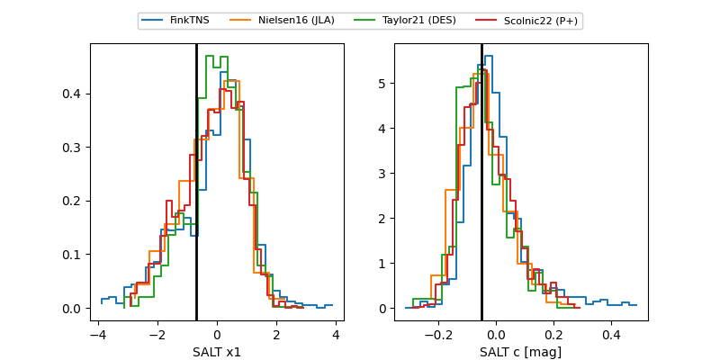

2026bax
Target 2026bax at 2026-01-28 11:31
Aliases and brokers:
FINK: link
Lasair: link
ALeRCE: link
TNS: link
YSE: link
alt names
ZTF26aadbbzh (ztf,fink_ztf)
2026bax (tns,yse)
Coordinates:
equatorial (ra, dec) = 148.6700,+9.12237
equatorial (HMS+DMS) = 09:54:40.80,+09:07:20.54
galactic (l, b) = (227.7230,+44.61808)
Flags:
Photometry:
last ztfg=19.41, ztfr=19.50
2 ztfg, 2 ztfr detections
Lightcurve

Visibility


Additional plots
